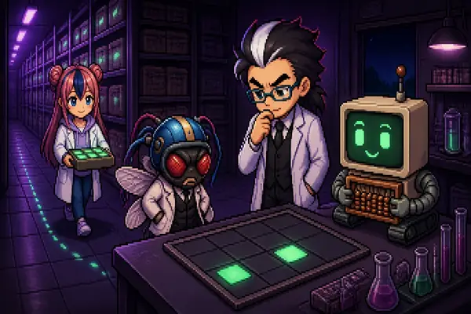

이번 주 논문을 박사·조수·초파리 연구원·주판봇이 진행하는 인터랙티브 해설 페이지로 읽습니다. 숫자는 원문 그대로, 장난감 모형에는 노란 도장을 찍었습니다. 페이지는 설치 없이 브라우저에서 바로 열립니다.

Tri Dao, Daniel Y. Fu, Stefano Ermon, Atri Rudra, Christopher Ré (2022). FlashAttention: Fast and Memory-Efficient Exact Attention with IO-Awareness. arXiv:2205.14135
계산을 줄이지 않고도 어텐션이 빨라질 수 있을까? GPU의 창고 메모리(HBM) 왕복을 줄이는 타일링·온라인 소프트맥스·재계산을 직접 돌려 보며 이해한다.
읽으러 가기 →같은 주차의 다음 논문이 추가되면 여기에 붙습니다.
해설과 판정. 판정은 숫자대로.
실험 진행과 숫자 발표.
의심하는 쪽. "시계로 재 봤어?"
확신하는 쪽. 계산량 장부를 믿는다.
| 파일 | 내용 |
|---|---|
03_flash_attention.html | 논문 1 해설 페이지 (단일 HTML, 외부 라이브러리 없음) |
docs/kg_03.json | 논문 1 지식 그래프 (노드 61 · 관계 79) |
docs/KG_00_registry_add_03.json | 시리즈 등록부 추가분 (새 ID 42개) |
docs/IMG_03_flash_attention.md | 이미지 제작 명세서와 매니페스트 |
docs/COVER_03_flash_attention.md | 글 표지 생성 지시문 |